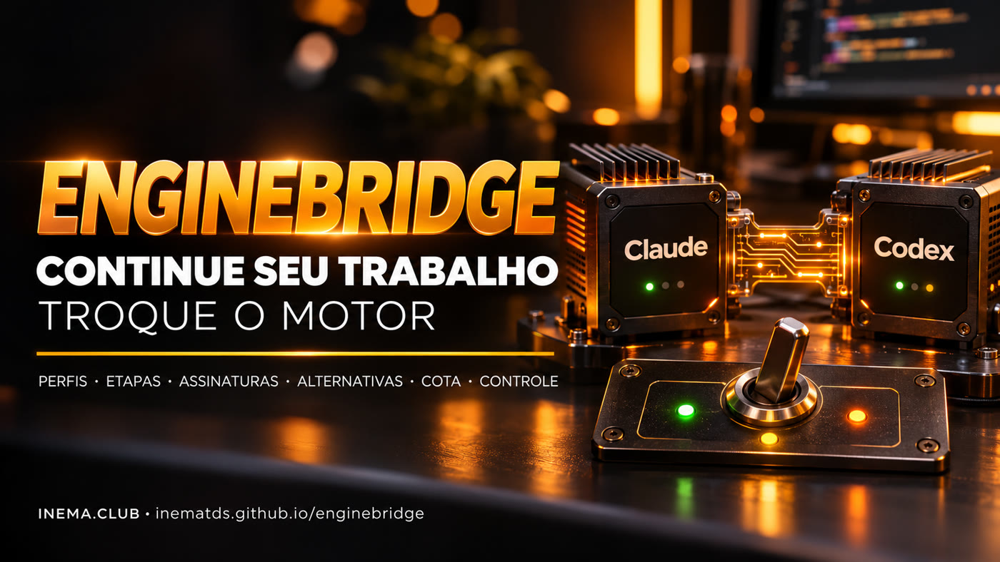
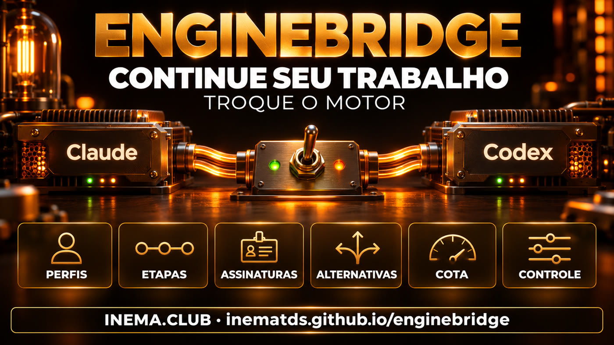

Seus bots e scripts usam Claude Code ou Codex? Escolha o motor de cada etapa e veja quando outra assinatura pode assumir. Comece pela simulação; depois integre seus sistemas.
v1.0.0 · Núcleo local · Integrações pendentes

Sua automação pode parar quando uma assinatura atinge a cota, mesmo tendo outra disponível. O EngineBridge é uma ferramenta local para escolher qual motor de IA atende cada etapa e usar uma alternativa declarada quando isso for permitido. Serve para quem mantém bots, scripts e rotinas com Claude Code e Codex. Você define perfis, modelos e esforço; o programa resolve a escolha sem consultar uma IA. Para executar textos, precisa de Python e dos programas autenticados pela assinatura.

Você pode preferir Codex no sistema inteiro e reservar Claude para a crítica. Cada motor mantém seus próprios modelos e esforços. Uma etapa fixada só muda para uma alternativa declarada.
O programa pode suspender a conta e escolher a próxima alternativa sem pedir que uma IA tome essa decisão. A assinatura de destino continua consumindo sua própria cota. O núcleo não consulta saldo nem garante que a outra conta esteja disponível.
Uma rejeição estruturada de cota, antes de qualquer resposta parcial ou ferramenta, pode acionar a alternativa declarada.
Os processos integrados que compartilham o mesmo estado deixam de admitir novos trabalhos nessa conta durante a suspensão.
Timeout, erro local ou resposta recusada pelo projeto interrompem a tentativa. Publicações e outras ações externas precisam de conferência própria.
O núcleo resolve políticas, executa textos pelos programas de assinatura e coordena tentativas com um banco local. Os testes usam executores fictícios e verificam troca, concorrência e interrupção. OpenPCBotV3, Refazvideo e crons ainda não usam esta biblioteca. Não há teste real dos dois adaptadores nesta entrega.
Os níveis menor, executor, topo e super reaproveitam a configuração central existente. Low em um modelo não equivale a low em outro. Perfis podem declarar exceções; as combinações devem ser comparadas nas tarefas reais, com os validadores de cada projeto.
Você não precisa desta parte para entender o que está acima.
Motor é o programa que chama o modelo. Perfil reúne motor, modelo e esforço. Etapa é uma parte do trabalho, como roteiro ou crítica. Nível expressa a exigência de trabalho; os nomes executor, topo e super são escolhas da sua configuração. Pool é o grupo que compartilha a mesma cota de conta. MCP é uma conexão de ferramentas externas, desativada neste executor textual. Rejeição estruturada é um código de erro legível pelo programa; texto solto de erro não basta para trocar automaticamente.
Requer Python 3.11+ e PyYAML 6. Para resolver os perfis de demonstração não precisa de login nem de saldo. Para executar, ajuste os caminhos dos programas e use contas autenticadas pela assinatura.
git clone https://github.com/linnoff88-dev/enginebridge.git
cd enginebridge
python3 -m venv .venv
source .venv/bin/activate
python3 -m pip install -e .
python3 -m unittest discover -s tests -v
python3 -m enginebridge resolve --project demonstracao --stage roteiroO primeiro executor fictício rejeita por cota. O segundo recebe o pedido. A saída contém simulado: true; o estado fica separado do banco padrão.
printf 'Escreva um roteiro.' | python3 -m enginebridge --state .state/demo.sqlite run --project demonstracao --stage roteiro --simulate --fail-firstO arquivo config/enginebridge.yaml reúne a política local. Níveis herdados leem ~/.config/ARCKHÉ/modelos.env; os perfis abaixo são exceções explícitas. OpenRouter permanece desabilitado e sem adaptador de API.
perfis:
codex-principal:
motor: codex
modelo: gpt-6.1-sol
esforco: medium
claude-alternativo:
motor: claude
modelo: claude-opus-5-5
esforco: low
projetos:
demonstracao:
etapas:
roteiro:
perfil: codex-principal
alternativa: claude-alternativo
critica:
perfil: claude-alternativo
alternativa: codex-principalInstale os programas Claude Code e Codex e faça login pela assinatura com os comandos abaixo, no seu terminal. Ajuste binario no YAML para o caminho instalado. Se usa um diretório específico de conta Codex, conta_env aponta para um arquivo contendo apenas CODEX_HOME=/caminho/da/conta; sem esse arquivo, o programa usa sua conta padrão. Para uma instalação nova sem modelos.env central, o comando de cópia abaixo cria um exemplo somente se o arquivo ainda não existir.
codex login
claude auth login
mkdir -p ~/.config/ARCKHÉ
test -f ~/.config/ARCKHÉ/modelos.env || cp config/modelos.example.env ~/.config/ARCKHÉ/modelos.envA preferência altera somente o YAML deste projeto e afeta as próximas resoluções sem motor fixado. O exemplo usa a etapa padrao, que herda o motor global: a primeira resolução escolhe Claude, a segunda escolhe Codex. A conta é identificada por quota_pool; desbloquear não apaga uma suspensão temporária por cota.
python3 -m enginebridge prefer claude
python3 -m enginebridge resolve --project demonstracao --stage padrao
python3 -m enginebridge prefer codex
python3 -m enginebridge resolve --project demonstracao --stage padrao
python3 -m enginebridge --state .state/demo.sqlite block --pool codex-principal
python3 -m enginebridge --state .state/demo.sqlite unblock --pool codex-principalEste comando consome a cota da assinatura escolhida. Os adaptadores isolam o diretório, desabilitam shell e MCP pessoal e removem credenciais de API do ambiente. Ajuste binários e conta no YAML. A resolução local não comprova compatibilidade dos argumentos, login ou disponibilidade do modelo.
printf 'Responda com uma frase.' | python3 -m enginebridge run --project demonstracao --stage roteiroPrimeiro conferir um texto curto em cada programa de assinatura. Depois adaptar dois consumidores textuais independentes. Só então integrar a seleção aos jobs e runners existentes do OpenPCBotV3. Imagens, tradução, ferramentas e publicação mantêm seus fluxos próprios.